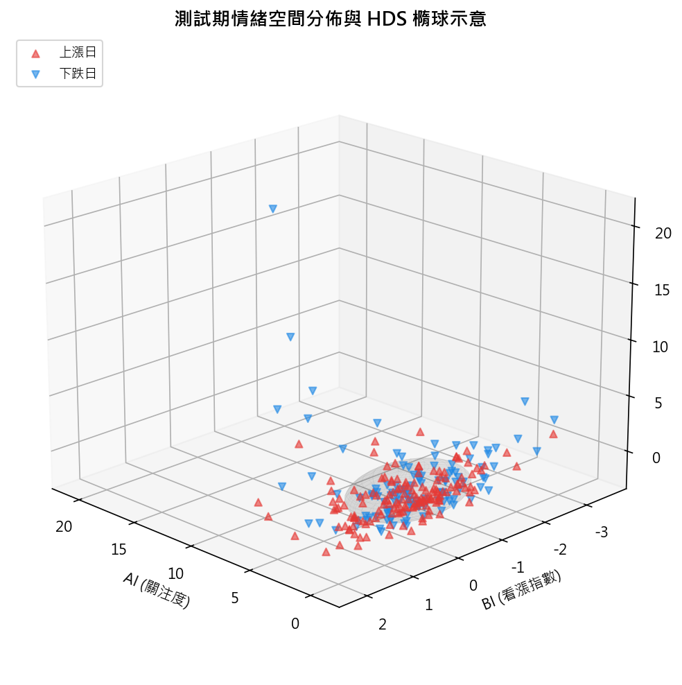
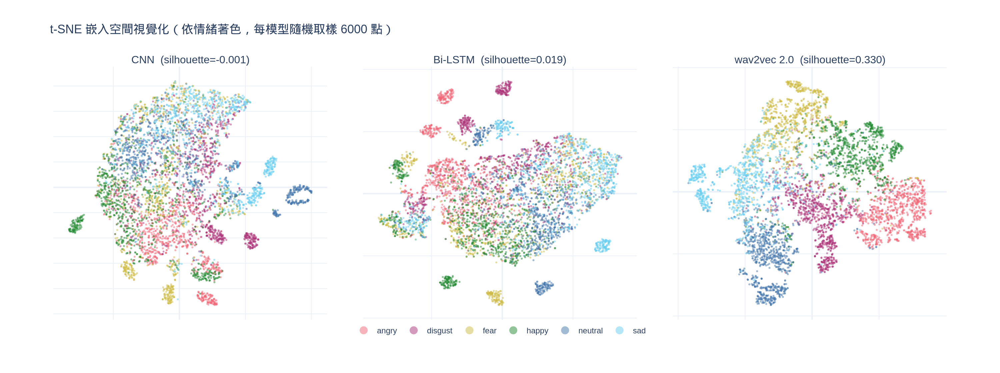
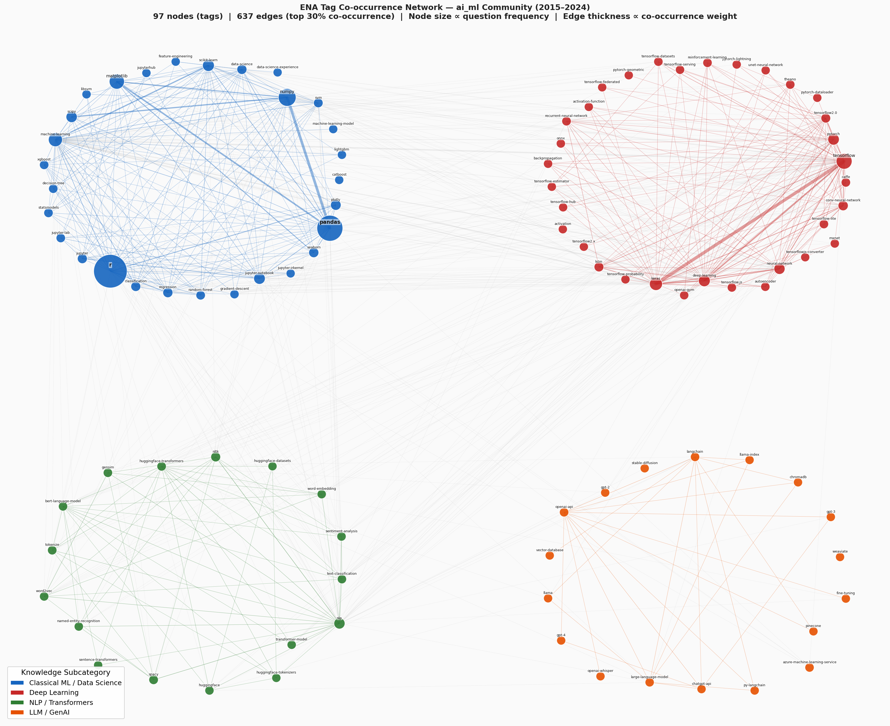

★ 碩士論文 · 代表作
會自己分析的「專利風險初篩」AI 系統
讓技術人員用中文描述技術，系統就能跨語言檢索美國專利、由四個不同視角的 AI 代理並行評估侵權風險，再整合成風險分級。我從零獨立打造前後端（FastAPI + React），並以 200 次受控實驗證明它的行為穩定性達 92.54%，同時誠實界定它「能保證穩定、但不取代正式法律意見」。
橫跨業務管理、數據分析與 AI 系統工程三個維度。從統計建模到 LLM 應用系統皆能獨立完成，專案走過完整的資料清理、特徵工程、模型調參、績效評估。習慣以嚴謹方法設計與驗證，效果量優先、誠實揭露侷限的方法論做事。代表作碩士論文以多代理協同架構打造專利 FTO 初篩系統，並提出一套可遷移的 LLM 行為評估方法論。我相信好的 AI 應用不能只是 demo，要經得起檢驗。
下面用最白話的方式說每個專案在做什麼；想看程式碼與技術細節的，每張卡都有 GitHub／Demo 連結。
讓技術人員用中文描述技術，系統就能跨語言檢索美國專利、由四個不同視角的 AI 代理並行評估侵權風險，再整合成風險分級。我從零獨立打造前後端（FastAPI + React），並以 200 次受控實驗證明它的行為穩定性達 92.54%，同時誠實界定它「能保證穩定、但不取代正式法律意見」。

把 PTT 鄉民的推噓和反諷交給 Claude 判讀真實情緒，再用自寫的最佳化演算法找出「情緒驅動」的盤勢訊號。在嚴格的時間切分下準確率 62%（基準 59.2%），並主動抓出、修掉一般人容易忽略的「資料偷看」偏誤，全程用單元測試與 CI 把關。


串流處理近 6,000 萬筆全球工程師問答（96.8GB），用社群網路分析量化「技術社群的知識邊界」，並發現 ChatGPT 問世後，AI 領域的知識連結幾乎完全重組（相似度只剩 0.21）。
完整跑過「資料 → 四種模型訓練 → 預測 → 投組 → 績效」的量化投資流程，系統性比較 OLS、隨機森林、神經網路與 XGBoost 哪個最會挑因子（約 1,660 行 Python）。
從全球 1,128 萬筆道德兩難資料精煉分析，用階層模型與 SHAP 發現「情境」對道德判斷的影響遠大於個人或文化背景，並誠實揭露資料本身的測量陷阱。